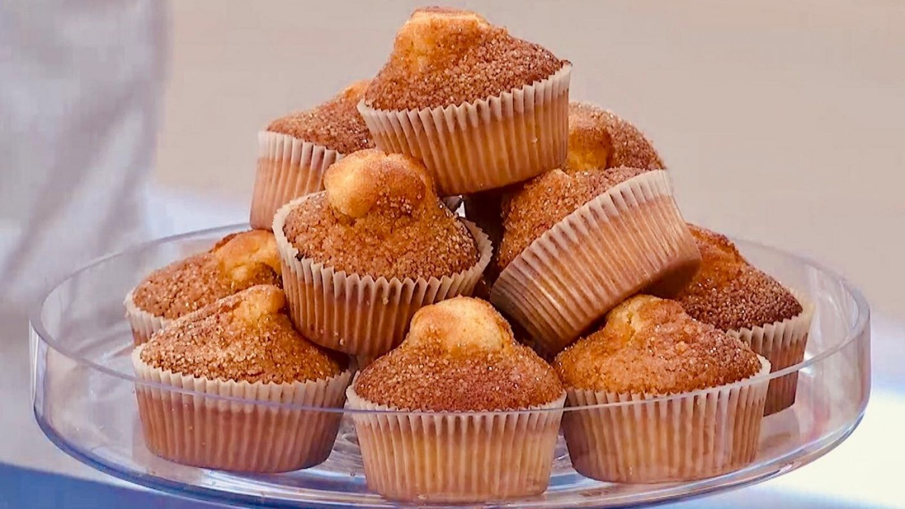
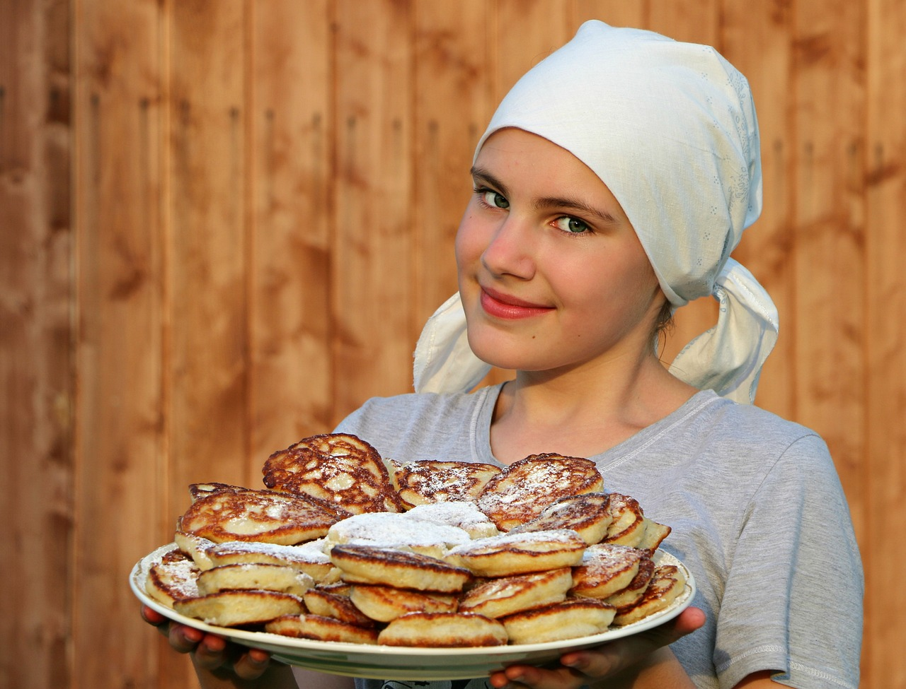

★★★★★
Magdalenes
Una magdalena acabada de sortir del forn, ben esponjosa i amb la seva copeta sobresortint de la base embolicada en el paper arrissat, una imatge a la qual és difícil resistir-se.
Porcions: 20
Ingredients
- 3 ous.
- 200 grams de farina fluixa de rebosteria.
- 125 grams de sucre blanc.
- 50 mililitres de llet sencera.
- 100 mililitres d'oli d'oliva extra verge suau.
- 10 grams de llevat químic (1/2 sobre).
- 1 pessic de sal
Utensilis
- 1 bol gran
- Varetes
- Forn
- Motlles de paper arrissats per a magdalenes
- Motlles de silicona per a magdalenes
Passos d'elaboració
- Bat els ous amb unes varetes, amb moviments ràpids i envoltants.
- Afegeix ara a poc a poc el sucre mentre bats amb moviments ràpids i envoltants la resta d'ingredients.
- Coloca els motlles de silicona sobre la safata, i introdueix el paper de magdalenes dins de cada espai.
- Preescalfa el forn a 220 graus amb temperatura amunt i avall sense aire.
- Omple fins a 3/4 els papers batent la massa perquè no s’espessi.
- Baixa la temperatura a 200 graus i enforna durant 15 minuts a la safata central.
- Deixa repossar dins el motlle perquè assenti bé la massa.

@lolalolita (01/04/2025)
Semblen de pastísseria.
@JoanVidal (02/04/2025)
M'ha encantat la recepta. No he tingut cap problema amb els ingredients!
@alexis0k (03/04/2025)
Perfecta per a un berenar amb amics.